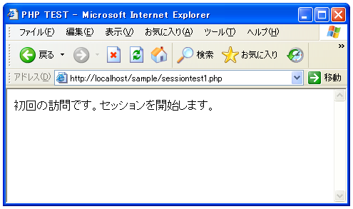
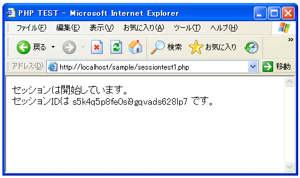

セッションの開始
まず最初にセッションについて簡単にご説明します。セッションはクッキーと似ていますが、クッキーの場合は管理したい値をクライアント側に保存するのに対し、セッションではサーバ側で管理することです。そしてクライアント側にはどのセッションを使っているかを識別するためのセッションIDだけをクライアント側に保存します。このセッションIDをクライアント側に保存するためにクッキーを使うのが一般的です(つまりセッションを使う場合は同時にクッキーも使います)。
クッキーだけを使って値をクライアント側に保存する場合は盗み見られる場合などもあります。セッションでは値はサーバ側にセッション変数として保存されますので大事なデータを扱う場合などはセッションの方を出来る限り使います。
では実際に使ってみましょう。まずクライアントからアクセスが最初にあった場合に、新しいセッションを作成しセッションを開始する必要があります。それにはsession_start関数を使います。
session_start bool session_start()
session_start() は、セッションを作成します。もしくは、リクエスト上で GET,POSTまたはクッキーにより渡されたセッションIDセッションに基づき現 在のセッションを復帰します 返り値: 常にTRUEを返します。
セッションがまだ開始されていない状態でこの関数が呼ばれた場合は、新しいセッションを開始しセッションIDを割り当てます。セッションIDはクライアント側にクッキー名「PHPSESSID」で保存されます。(クライアントがクッキーを利用できなくなっている場合は他のページで記載します)。
セッションが開始されているクライアント(セッションIDがクッキーとして保存されているクライアント)からアクセスがあった場合にこの関数を使っても新たにセッションを開始しなおすのではなく、サーバ側で保存されているセッション変数が利用できるように準備してくれるだけです。
<?php
session_start();
?>
サンプルプログラム
では実際に試してみます。まずセッションを開始させて、クライアント側にセッションIDがクッキーとして書き込まれるのかどうかを確認してみましょう。
<?php
session_start();
?>
<html>
<head><title>PHP TEST</title></head>
<body>
<?php
if (!isset($_COOKIE["PHPSESSID"])){
print('初回の訪問です。セッションを開始します。');
}else{
print('セッションは開始しています。<br>');
print('セッションIDは '.$_COOKIE["PHPSESSID"].' です。');
}
?>
</body>
</html>
上記ファイルをWWWサーバに設置しブラウザ経由で見ると下記のように表示されます。

最初にアクセスした時にセッションが開始されます。その時、セッションIDが割り当てられ自動的にクライアントにクッキーを使ってセッションIDが保存されます。ここでブラウザの再読み込みなどでページを更新して下さい。

今度はクッキー名「PHPSESSID」がクライアントから送られてきます。セッションは新規に開始されず以前のものが利用されます。セッションIDを表示して見ると分かりますが、セッションIDはランダムな値が使われるようになっています。
今回はセッションを開始して、セッションIDをクライアントに保存するところまでを確認しました。次のページではセッションを利用して保存しておきたい値をサーバに保存する方法を確認します。
( Written by Tatsuo Ikura )

著者 / TATSUO IKURA
初心者～中級者の方を対象としたプログラミング方法や開発環境の構築の解説を行うサイトの運営を行っています。